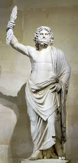
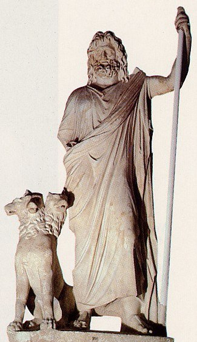
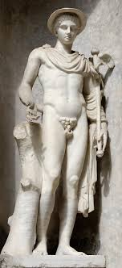
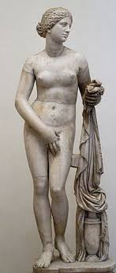
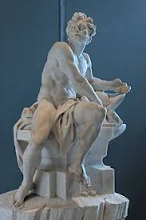

Hijo de Cronos y Rea, era el más joven de sus descendientes. En la mayoría de las tradiciones aparece casado con Hera (su hermana y esposa) aunque en el oráculo de Dódona su esposa era Dione, con quien según la Ilíada es padre de Afrodita.4 Es conocido por sus numerosas aventuras y amantes, fruto de las cuales fueron muchas deidades y héroes, incluyendo Atenea, Apolo, Artemisa, Hermes, Perséfone, Dioniso, Perseo, Heracles, Helena, Minos y las Musas. Con Hera suele decirse que Zeus fue padre de Ares, Hebe y Hefesto.

Ares
En la guerra representa la brutalidad, la violencia, y horrores de las batallas.2 Como dios de la virilidad masculina, a lo largo de la mitología se han contabilizado una treintena de amantes mujeres, con una descendencia de alrededor de 60 hijos (entre ellos Eros, Harmonía, Fobos, Deimos, Amazonas), siendo Afrodita, diosa del amor y la belleza, su amante preferida, su sanadora y aliada de guerra. Su equivalente romano es Marte.
Hades
Según el mito, él y sus hermanos Zeus y Poseidón derrotaron a los Titanes y reclamaron el gobierno del cosmos, adjudicándose el inframundo, el cielo y el mar, respectivamente; la tierra sólida, desde mucho antes provincia de Gea, estaba disponible para los tres al mismo tiempo.
Los antiguos romanos asociaron a Hades/Plutón con sus propias deidades ctónicas, Dis Pater y Orco; el dios etrusco equivalente era Aita.

Hermes
es el dios olímpico mensajero, de las fronteras y los viajeros que las cruzan, del ingenio y del comercio en general, de la astucia, de los ladrones y los mentirosos, y el que guía las almas al inframundo, al Hades.1 En la posterior mitología romana era denominado como Mercurio. Hijo de Zeus y la pléyade Maya.
Hermes también es protagonista de muchos mitos, como, por ejemplo, el de Filemón y Baucis.

Afrodita
en la mitología griega, la diosa de la belleza, la sensualidad y el amor. Su equivalente romano es Venus.
Pese a que en la mitología estaba casada con Hefesto, tuvo otros amantes, siendo Ares su favorito.

Hefesto
es el dios del fuego y la forja, así como de los herreros, los artesanos, los escultores, los metales y la metalurgia. Era adorado en todos los centros industriales y manufactureros de Grecia, especialmente en Atenas. Su equivalente aproximado en la mitología romana era Vulcano, en la japonesa Kagutsuchi, en la egipcia Ptah y en la hindú Agni.
Hefesto era bastante feo, estaba lisiado y cojo; aunque su esposa era Afrodita. Incluso el mito dice que, al nacer, Hera lo vio tan feo que lo tiró del Olimpo y le provocó una cojera. Tanto es así, que caminaba con la ayuda de un bastón y, en algunas vasijas pintadas, sus pies aparecen a veces al revés.

Atenea
es la diosa de la guerra, la civilización, sabiduría, estrategia en combate, de las ciencias, de la justicia y de la habilidad.4 Fue una de las principales divinidades del panteón griego y una de los doce dioses olímpicos. Atenea recibió culto en toda la Grecia Antigua y en toda su área de influencia, desde las colonias griegas de Asia Menor hasta las de la península ibérica y el norte de África.
Por ello su culto tomó muchas formas e incluso tuvo una extensión considerable hasta el punto de que su figura fue sincretizada con otras divinidades en las regiones aledañas al Mediterráneo. En la mitología romana se la adoraba con el nombre de Minerva.